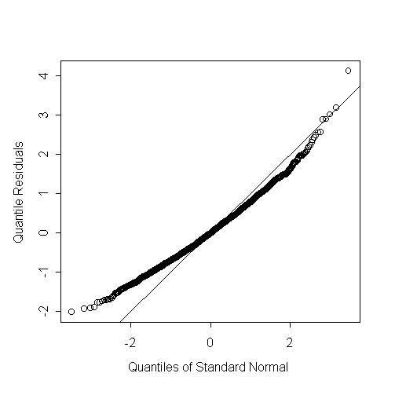
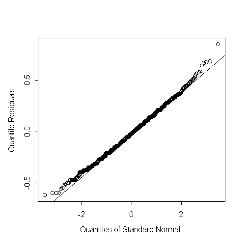
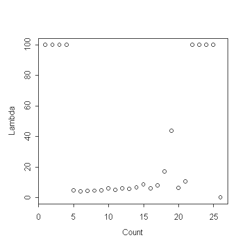

| / Home |
Keywords: underdispersion relative to Poisson distribution, factorial experiment, dispersion modelling.
This data comes from an experiment on induction of flowering of cyclamen. Plants of 4 varieties of cyclamen were subject to a combination of 6 temperature regimens and 4 levels of fertilization. The temperature regimens are combinations of five temperatures during the day (14, 16, 18, 20 and 26 degrees C) and four temperatures during the night (14, 16, 18 and 20 C). Not all the combinations of temperatures are present. The response is the number of flowers, which vary from 4 to 26, with mode 8.
| Variable | Description | ||
| Variety | Variety of cyclamen | ||
| Regimem | Temperature regimen (combination of the temperature during the day and the temperature during the night) | ||
| Day | Temperature during the day (Centigrade) | ||
| Night | Temperature during the night | ||
| Fertilizer | Level of fertilization | ||
| Flowers | Number of flowers | ||
Data File (tab-delimited text)
| The data were supplied by Rodrigo Labouriau of the Biometrics Research Unit, Danish Institute for Agricultural Sciences. |
The flowers counts look distinctly under-dispersed relative to the Poisson distribution. There appear to be two few small counts, so that the counts are right skew relative to the Poisson distribution:
> cyclamen <- na.omit(read.table("cyclamen.txt",header=T))
> cyclamen$Variety <- factor(cyclamen$Variety)
> cyclamen$Regimem <- factor(cyclamen$Regimem)
> cyclamen$Fertilizer <- factor(cyclamen$Fertilizer)
> attach(cyclamen)
> cyclamen <- na.omit(cyclamen)
> table(Day,Night)
14 16 18 20 26
14 320 0 0 320 319
16 0 320 0 0 0
18 0 0 319 0 0
20 0 0 0 320 0
> tapply(Regimem,list(Day,Night),mean)
14 16 18 20 26
14 1 NA NA 5 6
16 NA 2 NA NA NA
18 NA NA 3 NA NA
20 NA NA NA 4 NA
> table(Flowers)
4 5 6 7 8 9 10 11 12 13 14 15 16 17 18 19 21 26
16 107 233 324 348 259 245 153 107 57 29 22 9 3 1 3 1 1
> out <- glm(Flowers~(Variety+Regimem+Fertilizer)^2,family=poisson)
> anova(out,test="Chi")
Analysis of Deviance Table
Poisson model
Response: Flowers
Terms added sequentially (first to last)
Df Deviance Resid. Df Resid. Dev Pr(Chi)
NULL 1917 1256.219
Variety 3 26.6900 1914 1229.529 0.0000068
Regimem 5 121.3986 1909 1108.131 0.0000000
Fertilizer 3 1.8289 1906 1106.302 0.6086692
Variety:Regimem 15 20.4549 1891 1085.847 0.1551692
Variety:Fertilizer 9 6.3119 1882 1079.535 0.7083428
Regimem:Fertilizer 15 4.6705 1867 1074.865 0.9945677
> out <- glm(Flowers~Variety+Regimem,family=poisson)
> r <- qres.pois(out)
> qqnorm(r,ylab="Quantile Residuals")
> abline(0,1)>

Can try to estimate a Tweedie power family variance. The MLE estimate for the variance power is 2.46 while the REML estimate is virtually the same at 2.47.
> m2loglik
function(x)
{
dglm(Flowers ~ Variety + Regimem, family = tweedie(var.power = x,
link.power = 0))$m2loglik
}
> nlmin(m2loglik,1)
$x:
[1] 2.462306
$converged:
[1] T
$conv.type:
[1] "relative function convergence"
> m2loglik(1)
[1] 8496.399
> m2loglik(1.99999)
[1] 8380.303
> m2loglik(2.46)
[1] 8371.907
> m2loglik(3)
[1] 8383.227
> coxreid
function(x)
{
dglm(Flowers ~ Variety + Regimem, family = tweedie(var.power = x, link.power
= 0), method = "reml")$m2loglik
}
> nlmin(coxreid,2.46)
$x:
[1] 2.465982
$converged:
[1] T
$conv.type:
[1] "relative function convergence"
There is a dispersion effect for Variety. Varieties 3 and 4 have dispersion about 1/3 larger than the other two varieties.
> contrasts(Variety) <- contr.treatment(levels(Variety))
> contrasts(Regimem) <- contr.treatment(levels(Regimem))
> out <- dglm(Flowers~Variety+Regimem,~Variety,family=tweedie(var.power=2.47,link.power=0))
> summary(out)
Call: dglm(formula = Flowers ~ Variety + Regimem, dformula = ~ Variety, family = twe
edie(
var.power = 2.47, link.power = 0))
Mean Coefficients:
Value Std. Error t value
(Intercept) 2.30746315559 0.01771684 130.241233799
Variety2 -0.09690147202 0.01569619 -6.173565921
Variety3 -0.00006442688 0.01700265 -0.003789225
Variety4 -0.04018161723 0.01688345 -2.379941069
Regimem2 -0.04336368856 0.02084727 -2.080065615
Regimem3 -0.16314064162 0.02057673 -7.928406427
Regimem4 -0.19195936859 0.02049633 -9.365549669
Regimem5 -0.07916040725 0.02076102 -3.812933519
Regimem6 -0.24318730741 0.02039299 -11.925042558
(Dispersion Parameters for Tweedie family estimated as below )
Scaled Null Deviance: 2180.945 on 1917 degrees of freedom
Scaled Residual Deviance: 1918 on 1909 degrees of freedom
Dispersion Coefficients:
Value Std. Error t value
(Intercept) -3.81004656 0.06454972 -59.0249875
Variety2 -0.04703883 0.09128709 -0.5152846
Variety3 0.21758630 0.09128709 2.3835385
Variety4 0.20655446 0.09138253 2.2603276
(Dispersion Parameter for Gamma family taken to be 2 )
Scaled Null Deviance: 2323.196 on 1917 degrees of freedom
Scaled Residual Deviance: 2309.667 on 1914 degrees of freedom
Minus Twice the Log-Likelihood: 8358.401
Number of Alternating Iterations: 3
> tapply(fitted(out$disp),Variety,mean)
1 2 3 4
0.02214715 0.02112949 0.02753051 0.02722847
> anova(out)
Analysis of Deviance Table
Tweedie double generalized linear model
Response: Flowers
DF Seq.Chisq P Adj.Chisq P1
Mean model 8 237.8387 0.000000000 244.6100 0.000000000
Dispersion model 3 13.5079 0.003657629 13.5079 0.003657629
> qqnorm(residuals(out))
> qqline(residuals(out))

> m2loglik
function(x)
{
dglm(Flowers ~ Variety + Regimem, ~ Variety,
family = tweedie(var.power = x, link.power = 0))$m2loglik
}
> nlmin(m2loglik,2.46)
$x:
[1] 2.441391
$converged:
[1] T
$conv.type:
[1] "relative function convergence"
The following is the empirical lambda-gram for the data. The four values at lambda=100 are actually infinite. The data looks a lot like a Poisson with the first four values removed.

|
Home - About Us -
Contact Us Copyright © Gordon Smyth |